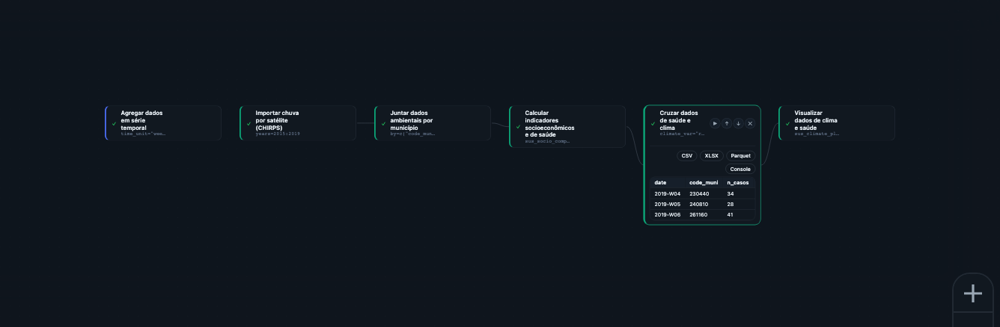

5 Etapa Integração: clima, saúde e território na mesma análise
No Capítulo 0 apresentamos a ideia de que o efeito do clima na saúde geralmente aparece com defasagem — o calor de hoje pode virar internação em poucos dias, a chuva de uma semana pode virar caso de dengue semanas depois. Até aqui, no Capítulo 2, você aprendeu a deixar uma série de saúde limpa, recortada e agregada. Falta uma peça: essa série de saúde, isoladamente, não permite estudar esse efeito — é preciso ter uma série de clima ao lado, casada no tempo e no espaço com os dados de saúde, e — na maioria dos casos — também uma medida do território em que isso acontece. É esse cruzamento que a Etapa Integração faz.
Este capítulo mantém a régua operacional do Capítulo 2, mas inclui decisões metodológicas: qual fonte de clima usar, qual defasagem escolher. Essas escolhas reaparecem como Parâmetros concretos de uma Função, as mesmas ideias que o Capítulo 0 apresentou de forma leiga.
5.1 Por que juntar clima, saúde e território
Descrever a série de óbitos respiratórios de uma região e descrever a série de temperatura da mesma região, separadamente, não é suficiente para responder “o calor está causando isso?”. É preciso colocar as duas séries lado a lado, na mesma linha do tempo, e — quando o desfecho tem componente de vulnerabilidade social, como dengue ou doença cardiovascular em idosos — colocar também um indicador de território ao lado. Isso importa porque território pobre costuma estar ligado às duas pontas do problema ao mesmo tempo: à exposição (saneamento precário mantém água parada e lixo o ano inteiro, elevando a reprodução do mosquito independente da chuva desta semana; moradia precária expõe mais ao calor) e, de forma independente, ao próprio desfecho (menor cobertura de saúde e maior densidade populacional já elevam a transmissão e a gravidade dos casos, com ou sem evento climático). Quando uma característica do território empurra as duas pontas dessa forma, ela é o que a epidemiologia chama de fator de confundimento — e, sem medi-la, o Pipeline pode atribuir ao clima um efeito que na verdade é (ou é também) de vulnerabilidade social. A Etapa Integração transforma esse cuidado metodológico em Passos do Pipeline.
5.2 As 28 Funções da Integração, em 3 grupos
A Biblioteca reúne 28 Funções na Etapa Integração, organizadas em três famílias:
(a) Clima por estação — dados observados em estações meteorológicas do INMET.
- Importar dados das estações do INMET (
sus_climate_inmet) — importa e processa dados meteorológicos do INMET. - Baixar normais climatológicas do INMET (
sus_climate_normals) — baixa normais climatológicas de 30 anos do INMET (três períodos de referência disponíveis), usadas como linha de base histórica. - Consultar variáveis das normais climáticas (
sus_climate_normals_meta) — permite explorar o catálogo de variáveis das normais antes de baixá-las. - Calcular anomalias climáticas (
sus_climate_anomaly) — calcula anomalias climáticas por comparação entre dados observados do INMET contra as normais de 30 anos. - Detectar ondas de calor (
sus_climate_compute_heatwaves) e Detectar ondas de frio (sus_climate_compute_coldwaves) — aplicam sete metodologias padrão (OMS, OMM, INMET, entre outras). - Calcular índices de conforto térmico (
sus_climate_compute_indicators) — calcula indicadores bioclimáticos e de estresse térmico. - Calcular índice de seca por chuva (SPI) (
sus_climate_compute_spi) e Calcular índice de seca (SPEI) (sus_climate_compute_spei) — caracterizam seca por precipitação e por precipitação-evapotranspiração. - Importar dados de chuva (UNIPLU-BR) (
sus_climate_uniplu) — importa o conjunto unificado de dados de chuva do Brasil (UNIPLU-BR). - Visualizações dedicadas: Visualizar dados de clima e saúde (
sus_climate_plot_aggregate), Visualizar ondas de calor (sus_climate_plot_heatwaves), Visualizar ondas de frio (sus_climate_plot_coldwaves) e Visualizar preenchimento de falhas climáticas (sus_climate_plot_fill).
(b) Clima e ambiente em grade — dados de satélite ou reanálise, com cobertura do território de forma contínua, sem depender da existência de uma estação próxima.
- Importar clima por satélite (ERA5) (
sus_grid_era5) — dados climáticos diários de reanálise ERA5-Land. - Importar chuva por satélite (CHIRPS) (
sus_grid_chirps) — dados de precipitação por satélite CHIRPS. - Importar focos de queimadas (
sus_grid_fires) — focos de queimada. - Três fontes de poluição do ar em grade: Importar poluição do ar (CAMS) (
sus_grid_pollution_cams), Importar poluição do ar de alta resolução (GHAP) (sus_grid_pollution_ghap) e Importar poluição do ar (MERRA-2) (sus_grid_pollution_merra2). - Importar índice de seca (PDSI) (
sus_grid_pdsi) — índice de severidade de seca de Palmer. - Calcular seca-relâmpago (SMVI) (
sus_grid_smvi) — índice de volatilidade de umidade do solo (seca-relâmpago). - Importar dados de desmatamento (PRODES) (
sus_grid_prodes) — dados de desmatamento do PRODES/TerraBrasilis. - Classificar clima por Köppen (
sus_grid_koppen) — classificação climática de Köppen-Geiger por município. - Juntar dados ambientais por município (
sus_grid_join) — junta qualquer dado ambiental em grade aos dados de saúde.
(c) Território/censo, mais a Função que amarra tudo com saúde:
- Calcular indicadores socioeconômicos e de saúde (
sus_socio_compute_indicators) — calcula indicadores socioeconômicos e epidemiológicos padronizados a partir de colunas já presentes nos dados (demografia, vulnerabilidade socioeconômica, entre outros). - Consultar indicadores disponíveis (
sus_socio_list_indicators) — lista todos os indicadores disponíveis no catálogo, com categoria e método de incerteza de cada um. - Cruzar dados de saúde e clima (
sus_climate_aggregate) — a Função que casa a série de saúde com a série de clima (de estação ou de grade), a peça descrita na próxima seção.
Estação (INMET) é indicada quando há uma estação bem localizada perto da população estudada e você quer variáveis meteorológicas detalhadas (temperatura, umidade, índices de estresse térmico). Grade/satélite entra quando a área de estudo é grande, tem muitos municípios sem estação próxima, ou quando a variável não existe em estação — chuva acumulada de longo prazo (CHIRPS), queimadas (grade de fogo) ou poluição do ar (CAMS/GHAP/MERRA-2) são exemplos em que a grade costuma ser a fonte mais adequada.
5.3 Função-chave da Etapa: Cruzar dados de saúde e clima
Cruzar dados de saúde e clima (sus_climate_aggregate) é uma das Funções com mais Parâmetros do catálogo porque define como clima e saúde se encontram no tempo. Recebe a série de saúde já preparada (Capítulo 2) e a série de clima (de estação ou de grade), e exige duas decisões centrais:
climate_var— qual variável climática usar ("all"para todas, ou uma específica comotair_dry_bulb_cpara temperatura do ar).time_unit— a unidade de agregação temporal do clima antes do cruzamento (day,week,month,quarter,year,season).
A decisão mais importante, porém, é temporal_strategy — o Parâmetro que formaliza a defasagem apresentada de forma leiga no Capítulo 0. Ele responde à pergunta “quantos dias entre a exposição climática e o desfecho de saúde eu quero considerar, e de que jeito?”. O catálogo oferece dez estratégias; as três mais centrais para começar são:
temporal_strategy |
Pergunta que responde | Exemplo de desfecho |
|---|---|---|
exact |
O desfecho reage no mesmo dia da exposição? | Calor de hoje × óbito cardiovascular agudo hoje |
discrete_lag |
O desfecho reage num dia específico depois da exposição? | Temperatura de N dias atrás × óbito de hoje |
moving_window |
O desfecho reage ao acúmulo de exposição numa janela de dias? | Chuva acumulada de 7-14 dias × casos de dengue |
Para um estudo de calor extremo e mortalidade cardiovascular aguda, exact é um bom ponto de partida — o efeito do calor sobre eventos cardiovasculares agudos se concentra nos primeiros dias após a exposição. Para dengue, em que o mosquito precisa de água acumulada e tempo de maturação, moving_window com uma janela de dias (Parâmetro window_days) descreve melhor a realidade biológica do que comparar o caso com a chuva do mesmo dia — mas atenção: entre a chuva que forma o criadouro e o caso confirmado, passam tipicamente várias semanas (reprodução do mosquito, incubação no vetor e no ser humano), então a janela de acúmulo de chuva normalmente deve ficar deslocada algumas semanas antes da data do caso, não colada a ela. Quando esse deslocamento importa para a análise, o catálogo tem offset_window, que combina acúmulo com defasagem.
5.4 Exercício guiado: saúde + clima + território em um só Pipeline
Vamos continuar o arco de dengue e clima (ec-02-dengue-clima) aberto no recorte “chuva” do Capítulo 0. Dengue combina bem com moving_window — chuva acumulada, não chuva pontual — e tem forte componente de vulnerabilidade social e de saneamento, o que justifica trazer também um indicador de território. O Modelo de catálogo clima-aggregate-exposicao traz o esqueleto desse cruzamento e pode ser carregado no Centro de Pipelines para conferência; aqui montamos a versão com os três mundos.


Na Integração, os Parâmetros centrais são os que definem exposição e defasagem: climate_var escolhe a variável climática, time_unit harmoniza a escala temporal, temporal_strategy define como o clima entra no tempo, e window_days ou lag_days controlam quantos dias de exposição entram no cruzamento. São eles que mudam a leitura epidemiológica do Resultado.
5.4.1 Passo a passo
Ponto de partida — a série de saúde já preparada no Capítulo 2 (dengue agregada por semana, por exemplo, em vez de óbitos respiratórios mensais — mas a lógica dos Passos é a mesma).
Trazer o clima — use Importar dados das estações do INMET (
sus_climate_inmet) quando houver boa cobertura de estação, comyearscobrindo o período de estudo eufda região Nordeste. Se a área for grande ou tiver baixa cobertura de estação, use Importar chuva por satélite (CHIRPS) (sus_grid_chirps) para chuva em grade.Trazer o território — use Calcular indicadores socioeconômicos e de saúde (
sus_socio_compute_indicators) para gerar indicadores como saneamento e renda a partir dos dados já ligados ao território dos municípios em estudo.Integrar — Função Cruzar dados de saúde e clima (
sus_climate_aggregate). Parâmetros-chave:climate_var = "rainfall_mm",time_unit = "week",temporal_strategy = "moving_window",window_dayspara definir a janela de acúmulo de chuva (por exemplo, 7 dias). Este exercício mantém a janela colada à semana do caso para simplificar; numa análise real de dengue vale deslocar essa janela algumas semanas antes da data do caso (Parâmetrooffset_daysda estratégiaoffset_window), para dar tempo à reprodução do mosquito e à incubação. O Resultado é uma única série temporal com saúde, clima e território lado a lado, na mesma linha do tempo.Visualizar — Função Visualizar dados de clima e saúde (
sus_climate_plot_aggregate), que produz um Resultado gráfico da série integrada, adequada para uma primeira leitura antes de qualquer modelagem.
O Modelo de catálogo ec-02-dengue-clima retoma esse cruzamento e segue até a fração atribuível. Neste capítulo, o objetivo é mostrar a etapa intermediária: a construção da série integrada que será usada na modelagem.
5.5 Cuidado: correlação não é o mesmo que causa
O Resultado que sai de Cruzar dados de saúde e clima (sus_climate_aggregate) é uma série integrada — não é ainda um modelo, e não prova causa. Ele deixa saúde, clima e território comparáveis lado a lado; transformar essa comparação em evidência estatística exige modelagem, controle de confundimento e medida de incerteza. Essa é a função da Etapa Análise & Modelagem. Para o gestor público, a fronteira é importante: uma série integrada ajuda a levantar hipótese e comunicar um problema, mas não prova, isoladamente, que uma ação sobre o clima reduzirá o desfecho de saúde.
1. Você quer estudar o efeito de uma onda de calor de 1 dia sobre óbitos cardiovasculares no mesmo dia. Qual temporal_strategy faz mais sentido, exact ou moving_window? Por quê?
exact — o desfecho cardiovascular agudo reage no mesmo dia da exposição ao calor; moving_window serviria melhor para exposições que se acumulam ao longo de dias, como chuva e dengue.
2. Por que a Etapa Integração inclui uma Função de indicadores socioeconômicos, e não só dados de clima?
Porque território pobre costuma estar ligado tanto à exposição (saneamento precário mantém água parada o ano inteiro, elevando a reprodução do mosquito independente da chuva desta semana) quanto, de forma independente, ao próprio desfecho (menor cobertura de saúde já eleva a transmissão e a gravidade dos casos, com ou sem evento climático) — é o que a epidemiologia chama de fator de confundimento. Sem um indicador de território (renda, saneamento, infraestrutura), o Pipeline corre o risco de atribuir ao clima um efeito que na verdade é (ou é também) de vulnerabilidade social.
3. Qual a diferença entre clima “por estação” e clima “em grade”, e me dê um exemplo de quando cada um seria a escolha certa?
Clima por estação, importado por Importar dados das estações do INMET (sus_climate_inmet), vem de pontos de medição do INMET — indicado quando há estação bem localizada perto da população estudada. Clima em grade, como Importar clima por satélite (ERA5) (sus_grid_era5) ou Importar chuva por satélite (CHIRPS) (sus_grid_chirps), vem de satélite/reanálise e cobre o território de forma contínua — indicado quando a área é grande, tem municípios sem estação próxima, ou a variável (queimada, poluição) não existe em estação.